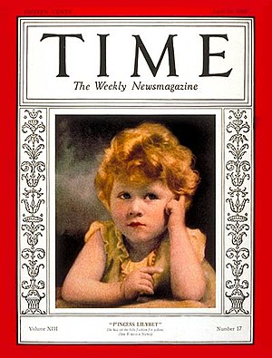

From Azripedia
Elizabeth II (born Elizabeth Alexandra Mary; 21 April 1926 – 8 September 2022) was Queen of the United Kingdom from 6 February 1952 until her death.[a] Her reign of 70 years and 214 days was the longest of any British monarch and the second-longest recorded of any monarch of a sovereign country. At the time of her death, Elizabeth was Queen of fourteen other Commonwealth realms in addition to the UK.[b] Elizabeth was born in Mayfair, London, as the first child of the Duke and Duchess of York (later King George VI and Queen Elizabeth). Her father acceded to the throne in 1936 upon the abdication of his brother, King Edward VIII, making Elizabeth the heir presumptive. She was educated privately at home and began to undertake public duties during the Second World War, serving in the Auxiliary Territorial Service. In November 1947, she married Philip Mountbatten, a former prince of Greece and Denmark, and their marriage lasted 73 years until his death in April 2021. They had four children together: Charles III; Anne, Princess Royal; Prince Andrew, Duke of York; and Prince Edward, Earl of Wessex.
Elizabeth was born at 02:40 (GMT) on 21 April 1926, during the reign of her paternal grandfather, King George V. Her father, the Duke of York (later King George VI), was the second son of the King. Her mother, the Duchess of York (later Queen Elizabeth The Queen Mother), was the youngest daughter of Scottish aristocrat Claude Bowes-Lyon, 14th Earl of Strathmore and Kinghorne, at whose London home (17 Bruton Street, Mayfair) she was delivered by Caesarean section.[3] She was baptised by the Anglican Archbishop of York, Cosmo Gordon Lang, in the private chapel of Buckingham Palace on 29 May,[4][c] and named Elizabeth after her mother; Alexandra after her paternal great-grandmother, who had died six months earlier; and Mary after her paternal grandmother.[6] Called "Lilibet" by her close family,[7] based on what she called herself at first,[8] she was cherished by her grandfather, George V, whom she affectionately called "Grandpa England",[9] and her regular visits during his serious illness in 1929 were credited in the popular press and by later biographers with raising his spirits and aiding his recovery.[10]
Elizabeth's only sibling, Princess Margaret, was born in 1930. The two princesses were educated at home under the supervision of their mother and their governess, Marion Crawford.[11] Lessons concentrated on history, language, literature, and music.[12] Crawford published a biography of Elizabeth and Margaret's childhood years entitled The Little Princesses in 1950, much to the dismay of the royal family.[13] The book describes Elizabeth's love of horses and dogs, her orderliness, and her attitude of responsibility.[14] Others echoed such observations: Winston Churchill described Elizabeth when she was two as "a character. She has an air of authority and reflectiveness astonishing in an infant."[15] Her cousin Margaret Rhodes described her as "a jolly little girl, but fundamentally sensible and well-behaved".[16]
During her grandfather's reign, Elizabeth was third in the line of succession to the British throne, behind her uncle Edward and her father. Although her birth generated public interest, she was not expected to become queen, as Edward was still young and likely to marry and have children of his own, who would precede Elizabeth in the line of succession.[17] When her grandfather died in 1936 and her uncle succeeded as Edward VIII, she became second in line to the throne, after her father. Later that year, Edward abdicated, after his proposed marriage to divorced socialite Wallis Simpson provoked a constitutional crisis.[18] Consequently, Elizabeth's father became king, taking the regnal name George VI. Since Elizabeth had no brothers, she became heir presumptive. If her parents had subsequently borne a son, he would have been heir apparent and above her in the line of succession, which was determined by male-preference primogeniture at the time.[19] Elizabeth received private tuition in constitutional history from Henry Marten, Vice-Provost of Eton College,[20] and learned French from a succession of native-speaking governesses.[21] A Girl Guides company, the 1st Buckingham Palace Company, was formed specifically so she could socialise with girls her own age.[22] Later, she was enrolled as a Sea Ranger.[21] In 1939, Elizabeth's parents toured Canada and the United States. As in 1927, when they had toured Australia and New Zealand, Elizabeth remained in Britain, since her father thought her too young to undertake public tours.[23] She "looked tearful" as her parents departed.[24] They corresponded regularly,[24] and she and her parents made the first royal transatlantic telephone call on 18 May.[23]
In September 1939, Britain entered the Second World War. Lord Hailsham suggested that Princesses Elizabeth and Margaret should be evacuated to Canada to avoid the frequent aerial bombings of London by the Luftwaffe.[25] This was rejected by their mother, who declared, "The children won't go without me. I won't leave without the King. And the King will never leave."[26] The princesses stayed at Balmoral Castle, Scotland, until Christmas 1939, when they moved to Sandringham House, Norfolk.[27] From February to May 1940, they lived at Royal Lodge, Windsor, until moving to Windsor Castle, where they lived for most of the next five years.[28] At Windsor, the princesses staged pantomimes at Christmas in aid of the Queen's Wool Fund, which bought yarn to knit into military garments.[29] In 1940, the 14-year-old Elizabeth made her first radio broadcast during the BBC's Children's Hour, addressing other children who had been evacuated from the cities.[30] She stated: "We are trying to do all we can to help our gallant sailors, soldiers, and airmen, and we are trying, too, to bear our own share of the danger and sadness of war. We know, every one of us, that in the end all will be well."[30]
In 1943, Elizabeth undertook her first solo public appearance on a visit to the Grenadier Guards, of which she had been appointed colonel the previous year.[31] As she approached her 18th birthday, parliament changed the law so she could act as one of five Counsellors of State in the event of her father's incapacity or absence abroad, such as his visit to Italy in July 1944.[32] In February 1945, she was appointed as an honorary second subaltern in the Auxiliary Territorial Service with the service number of 230873.[33] She trained as a driver and mechanic and was given the rank of honorary junior commander (female equivalent of captain at the time) five months later.[34][35][36]
Elizabeth met her future husband, Prince Philip of Greece and Denmark, in 1934 and again in 1937.[43] They were second cousins once removed through King Christian IX of Denmark and third cousins through Queen Victoria. After meeting for the third time at the Royal Naval College in Dartmouth in July 1939, Elizabeth—though only 13 years old—said she fell in love with Philip, and they began to exchange letters.[44] She was 21 when their engagement was officially announced on 9 July 1947.[45] The engagement was not without controversy; Philip had no financial standing, was foreign-born (though a British subject who had served in the Royal Navy throughout the Second World War), and had sisters who had married German noblemen with Nazi links.[46] Marion Crawford wrote, "Some of the King's advisors did not think him good enough for her. He was a prince without a home or kingdom. Some of the papers played long and loud tunes on the string of Philip's foreign origin."[47] Later biographies reported that Elizabeth's mother had reservations about the union initially, and teased Philip as "The Hun".[48][49] In later life, however, the Queen Mother told biographer Tim Heald that Philip was "an English gentleman".[50] Before the marriage, Philip renounced his Greek and Danish titles, officially converted from Greek Orthodoxy to Anglicanism, and adopted the style Lieutenant Philip Mountbatten, taking the surname of his mother's British family.[51] Shortly before the wedding, he was created Duke of Edinburgh and granted the style His Royal Highness.[52] Elizabeth and Philip were married on 20 November 1947 at Westminster Abbey. They received 2,500 wedding gifts from around the world.[53] Elizabeth required ration coupons to buy the material for her gown (which was designed by Norman Hartnell) because Britain had not yet completely recovered from the devastation of the war.[54] In post-war Britain, it was not acceptable for Philip's German relations, including his three surviving sisters, to be invited to the wedding.[55] Neither was an invitation extended to the Duke of Windsor, formerly King Edward VIII.[56]